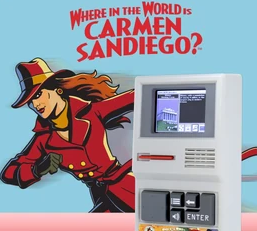

Where in the World Is Carmen Sandiego?
Poucos jogos educativos são tão icônicos quanto Where in the World Is Carmen Sandiego?. Lançado em 1985 pela Broderbund Software, o título transformou geografia e cultura em uma empolgante aventura de investigação — e acabou se tornando presença marcante em salas de aula de vários países.
Jogar no ClassicReloadUm jogo criado com um propósito
Desenvolvido por Gene Portwood, Lauren Elliott e Dane Bigham, o jogo nasceu com uma ideia simples: tornar divertido o aprendizado de geografia. Em vez de decorar países, capitais e moedas, o jogador aprende explorando o mundo enquanto persegue Carmen e sua quadrilha de ladrões internacionais.
Lançado em 23 de abril de 1985, o jogo fez sucesso especialmente nas escolas por unir educação e diversão de maneira natural. A fórmula conquistou professores e estudantes e deu origem a continuações, programas de televisão e novas adaptações da franquia.
Como funciona a investigação
Você assume o papel de um detetive da agência ACME. Um criminoso roubou um artefato cultural — como uma pintura rara ou uma joia preciosa — e cabe a você seguir suas pistas por diferentes países antes que o tempo acabe.
- Coleta de pistas: testemunhas e documentos revelam detalhes sobre monumentos, idiomas, moedas e costumes do próximo destino.
- Viagens pelo mundo: interpretar corretamente as pistas mantém você no encalço do ladrão; escolher o país errado custa um tempo precioso.
- Corrida contra o relógio: cada deslocamento consome horas da investigação. Se demorar demais, o suspeito escapa.
- Identificação do suspeito: pistas sobre aparência, interesses e hábitos ajudam a montar o perfil e emitir o mandado correto.
- A quadrilha de Carmen: os criminosos têm características próprias, tornando cada caso uma nova oportunidade de aprender e investigar.
Um legado que atravessou gerações
Carmen Sandiego mostrou que aprender não precisava ser uma tarefa repetitiva. Ao misturar raciocínio, pesquisa, administração do tempo e exploração, o jogo incentivou gerações a conhecer melhor o planeta. Seu sucesso ajudou a consolidar os jogos educativos e transformou a misteriosa ladra de vermelho em um verdadeiro ícone da cultura pop.
Esta versão clássica de DOS é hospedada pelo ClassicReload e será aberta em uma nova aba.